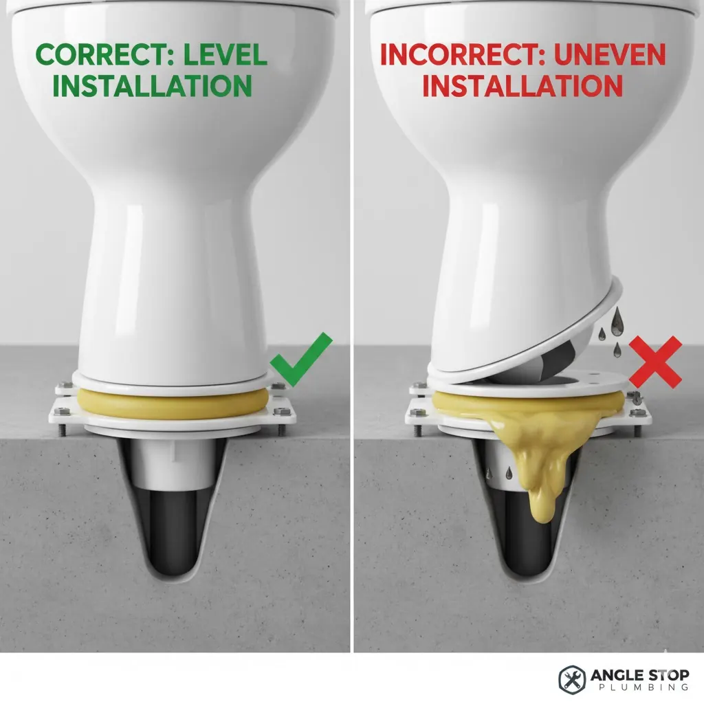

Let's talk about something that most homeowners never really think about, but is absolutely critical to a leak-free bathroom: the toilet closet flange. It's that unsung hero, the connection point between your toilet and the drain pipe, and if it's not installed perfectly level, you're looking at a potential plumbing nightmare down the line.
At Angle Stop Plumbing, we've seen our fair share of DIY projects gone wrong, and a wobbly toilet is often the first symptom of a poorly installed flange. So, why is this seemingly small detail so important?
The Science of a Secure Seal
Your toilet sits on a wax ring (or a rubber alternative), and this ring is what creates a watertight seal between the toilet's base and the closet flange. When the flange is perfectly level, the toilet sits evenly on this ring, compressing it uniformly and creating a robust, leak-proof barrier.
Now, imagine if the flange is even slightly off-kilter.

A tilted flange means that one side of the wax ring will be compressed more than the other, creating an uneven seal. Over time, the pressure on the less-compressed side can weaken the seal, leading to small, insidious leaks.
The Sneaky Dangers of a Slow Leak
Unlike a burst pipe, a leaking toilet flange often goes unnoticed for a long time. These slow leaks can cause significant damage before you even realize there's a problem:
- Subfloor Rot: Water seeping under your toilet will eventually saturate your subfloor, leading to wood rot. This can compromise the structural integrity of your bathroom floor and create an expensive repair.
- Mold and Mildew: Damp, dark conditions are a breeding ground for mold and mildew. Not only can this cause unpleasant odors, but it can also lead to respiratory issues and allergic reactions for your family.
- Ceiling Damage: If your bathroom is on an upper floor, a leaking toilet can cause water stains, drips, and even structural damage to the ceiling below.
- Pest Infestations: Constant moisture can attract pests like cockroaches and termites, adding another layer of headache to your home.
Why DIY Can Be a Gamble (and How Angle Stop Plumbing Provides Peace of Mind)
Many homeowners are confident in tackling a toilet replacement themselves. And while the process might seem straightforward, getting that flange perfectly level is often where DIY projects fall short. It requires precision, the right tools, and an understanding of floor variations – something a seasoned plumber has experience with.
At Angle Stop Plumbing, our licensed and experienced technicians understand the critical importance of a level toilet flange. We don't just "set" your toilet; we ensure that every component, especially the flange, is installed to exacting standards.
Here's how Angle Stop Plumbing ensures a future-proof, leak-free toilet installation:
- Thorough Inspection: We assess the existing flange and surrounding floor for any imperfections or issues.
- Precise Leveling: Using specialized tools, we ensure the flange is perfectly level, often making minor adjustments to the subfloor or using shims as needed.
- Correct Wax Ring Installation: We select the appropriate wax ring for your toilet and flange height, ensuring an optimal, long-lasting seal.
- Secure Fastening: We make sure the toilet is securely bolted to the flange, preventing any rocking or movement that could compromise the seal.
Don't let a small detail like an unlevel toilet flange turn into a major headache. Investing in professional installation from Angle Stop Plumbing can save you thousands in potential damage and give you the peace of mind that your bathroom is truly watertight.